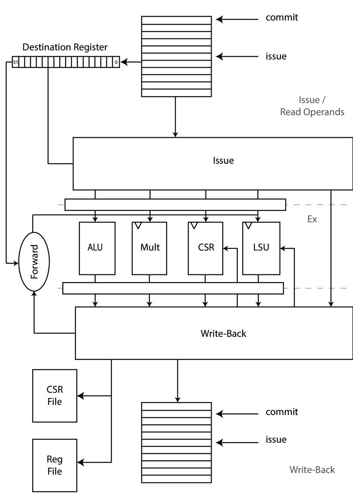

Issue Stage
The issue stage’s purpose is to receive the decoded instructions and issue them to the various functional units. Furthermore the issue stage keeps track of all issued instructions, the functional unit status and receives the write-back data from the execute stage. Furthermore it contains the CPU’s register file. By using a data-structure called scoreboard (see ) it knows exactly which instructions are issued, which functional unit they are in and which register they will write-back to. As previously mentioned you can roughly divide the execution in four parts 1. issue, 2. read operands, 3. execute and 4. write-back. The issue stage handles step one, two and four.

Issue
When the issue stage gets a new decoded instruction it checks whether the required functional unit is free or will be free in the next cycle. Then it checks if its source operands are available and if no other, currently issued, instruction will write the same destination register. Furthermore it keeps track that no unresolved branch gets issued. The latter is mainly needed to simplify hardware design. By only allowing one branch we can easily back-track if we later find-out that we’ve mis-predicted on it.
By ensuring that the scoreboard only allows one instruction to write a
certain destination register it easies the design of the forwarding path
significantly. The scoreboard has a combinatorial circuit which outputs
the status of all 32 destination register together with what functional
unit will produce the outcome. This signal is called rd_clobber.
The issue stage communicates with the various functional units independently. This in particular means that it has to monitor their ready and valid signals, receive and store their write-back data unconditionally. It will always have enough space as it allocates a slot in the scoreboard for every issued instruction. This solves the potential structural hazards of smaller microprocessors. This modular design will also allow to explore more advanced issuing technique like out-of-order issue ().
The issuing of instructions happen in-order, that means order of program flow is naturally maintained. What can happen out-of-order is the write-back of each functional unit. Think for example, that the issue stage issues a load which takes $n$ clock cycles to produce a valid result. In the next cycle the issue stage issues an ALU instruction like an addition. The addition will just take one clock cycle to return and therefore return before the load’s result is ready. Because of this we need to assign IDs to the various issue stages. The ID resembles the (unique) position in which the scoreboard will store the result of this instruction. The ID (called transaction ID) has enough bits to uniquely represent each slot in the scoreboard and needs to be passed along with the other data to the corresponding functional unit.
This scheme allows the functional units to operate in complete independence of the issue logic. They can return different transactions in different order. The scoreboard will know where to put them as long as the corresponding ID is signaled alongside the result. This scheme even allows the functional unit to buffer results and process them entirely out-of-order if it makes sense to them. This is a further example of how to efficiently decouple the different modules of a processor.
Read Operands
Read operands is physically happens in the same cycle as the issuing of
instructions but can be conceptually thought of as another stage. As the
scoreboard knows which registers are getting written it can handle the
forwarding of those operands if necessary. The design goal was to
execute two ALU instructions back to back (e.g.: with no bubble in
between). The operands come from either the register file (if no other
instruction currently in the scoreboard will write that register) or be
forwarded by the scoreboard (by looking at the rd_clobber signal).
The operand selection logic is a classical priority selection giving precedence to results form the scoreboard over the register file as the functional unit will always produce the more up to date result. To obtain the right register value we need to poll the scoreboard for both source operands.
Scoreboard
The scoreboard is implemented as a FIFO with one read and one write port with valid and acknowledge signals. In addition to that it provides the aforementioned signals which tell the rest of the CPU which registers are going to be clobbered by a previously scheduled instruction. Instruction decode directly writes to the scoreboard if it is not already full. The commit stage looks for already finished instructions and updates the architectural state. Which either means going for an exception, updating the register or CSR file.